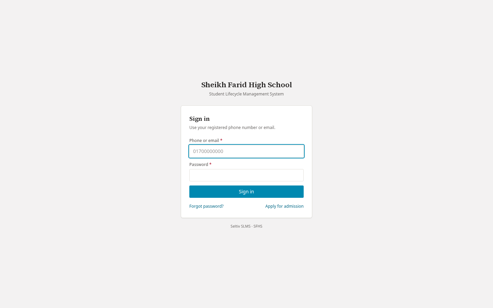
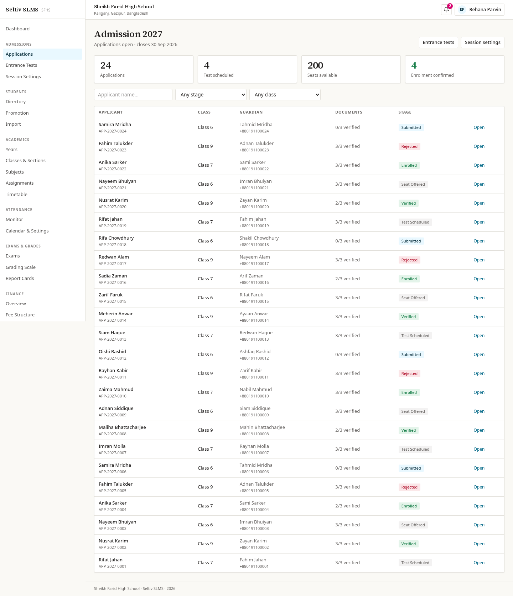
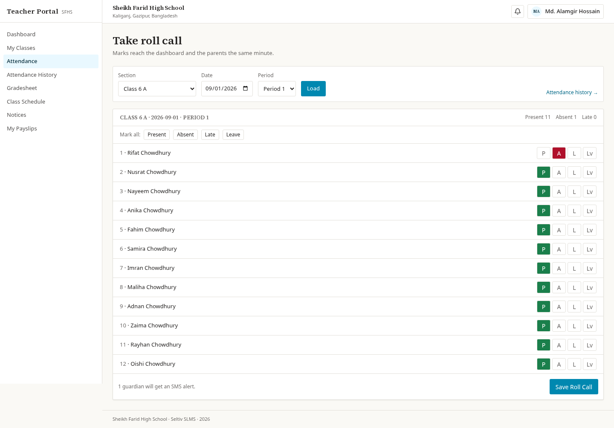
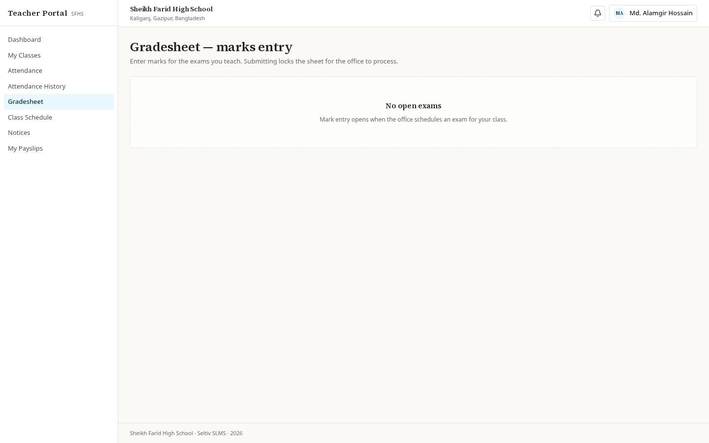
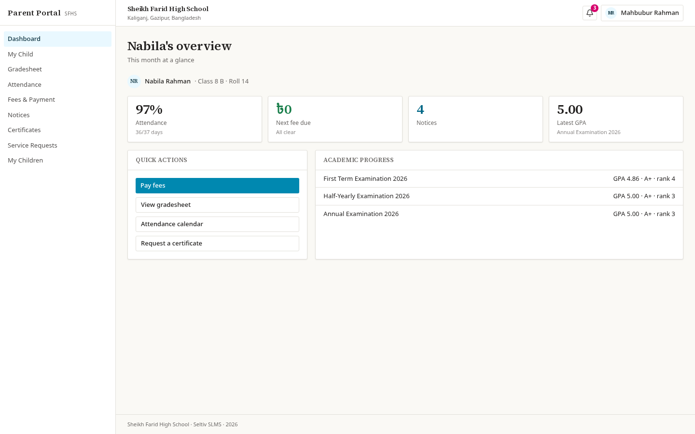
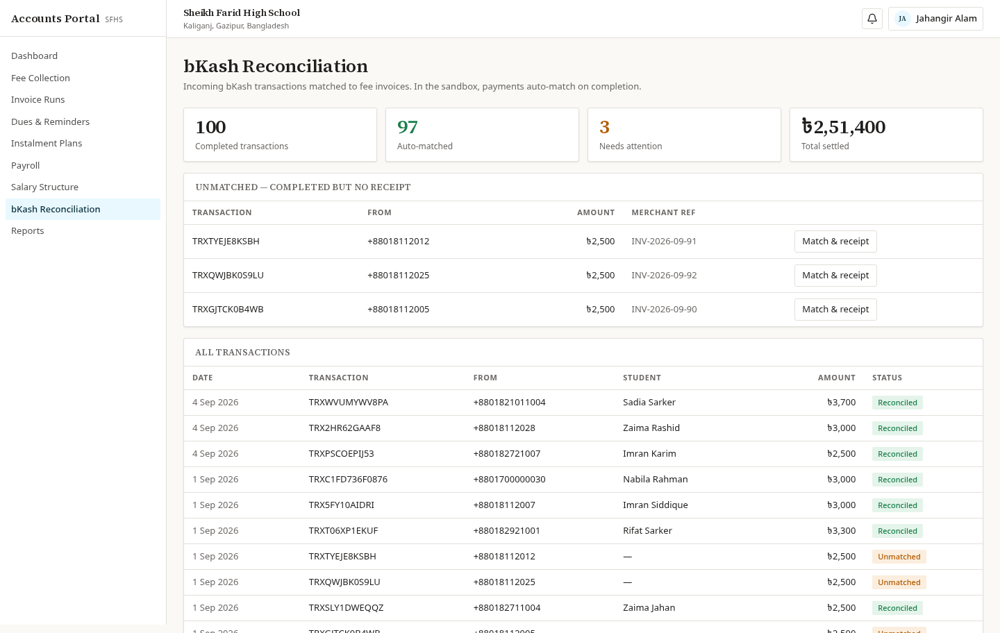
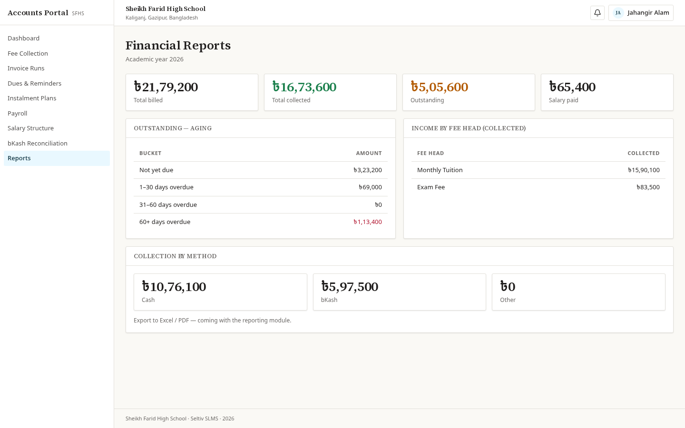

Seltiv SLMS
Your whole school. On one screen.
One login. Every role sees their own portal.

For the school office

Admissions to report cards — one pipeline, not a filing cabinet.

For teachers
Roll call takes seconds. Marks reach the report card the same day.


For parents

Pay from a phone. No bank queue.

For accounts
The ledger closes itself.


Reproducible for any school running more than one branch.
01Own process
Own database
Own database
02Own process
Own database
Own database
03Own process
Own database
Own database
+
Seltiv SLMS
Built for every school.